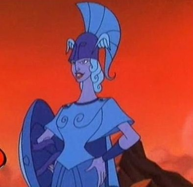
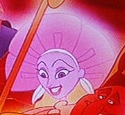
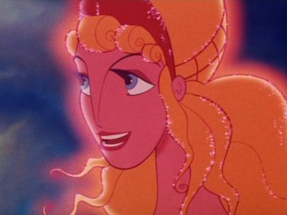
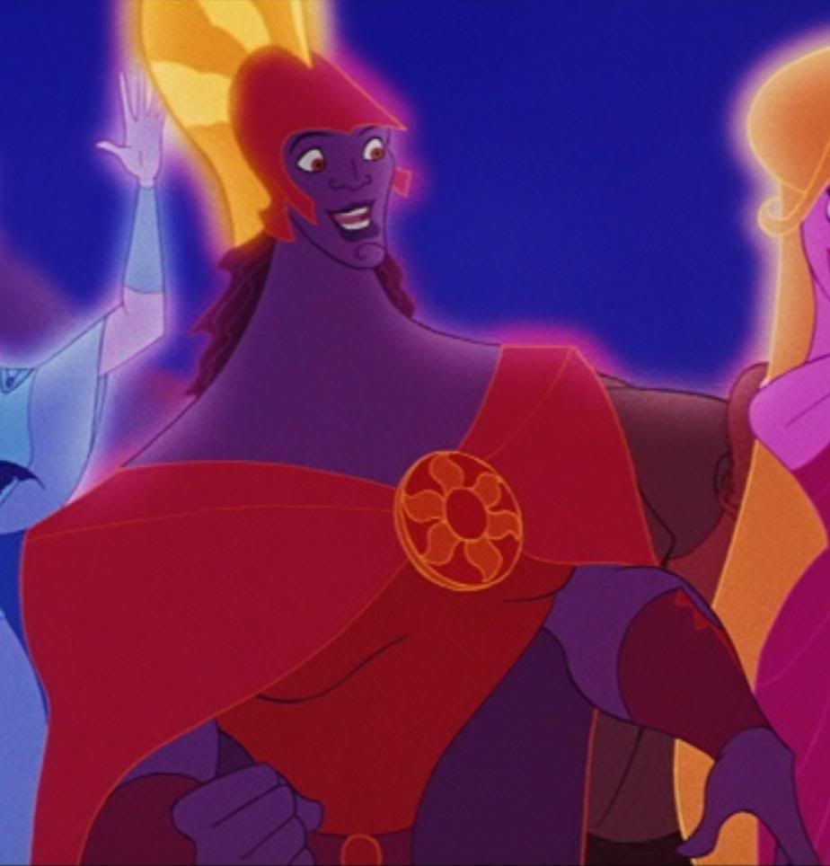
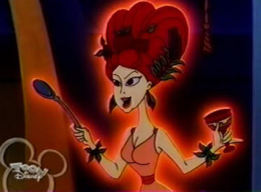

We are a group of five undergraduate women studying computer science (four of us at Brown University).
This year, we are excited to have a fifth coordinator, Catherine Rossbach, from University of Maryland, who will be studying the program so she can expand it to Baltimore next summer. The coordinators for Artemis 2012 are:
You can contact us at artemis@cs.brown.edu.
Annie Carlson

Age: 20
Hometown: Winston-Salem, NC
Favorites
Color: Green
Artist/band: The Beatles
Food: Dark chocolate and pomegranate
Operating system: Linux
Computer application: Firefox
Dessert: Chocolate mousse cake
If I were a(n) ----, I'd be a(n) ----.
Mythological Creature: Naga
Number: 42
Household appliance: Computer
Ice cream flavor: Green tea
Greek Goddess: Athena
Parielle Lacy

Age: 18
Hometown: Detroit, MI
Favorites
Color: Light Pink
Artist/band: Story of the Year
Food: Spaghetti & Burritos
Operating system: Mac OSX
Computer Application: Photoshop
Dessert: Cinnamon coffee cake muffins
If I were a(n) ----, I'd be a(n) ----.
Mythical Creature: Greek muse
Number: 72
Household appliance: Refrigerator
Ice cream flavor: World class chocolate
Greek Goddess: Persephone
Hobbies/interests: yoga, sushi, dressing up in red shirts and pretending to work at Target to mess with customers
What did you want to be when you were a little kid? President
Hobbies/interests: Hiking, writing, playing D&D, math, artificial intelligence, linguistics
What did you want to be when you were a little kid? A space mechanic
Melanie Li

Age: 20
Hometown: Beijing, China
Favorites
Color: Blue
Artist/band: The Beatles
Food: White chocolate, sushi
Operating system: Mac OSX
Computer Application: Google Chrome
Dessert: Cheese Cake
If I were a(n) ----, I'd be a(n) ----.
Mythical Creature: Pheonix
Number: 9
Household appliance: Microwave
Ice cream flavor: Green tea
Greek Goddess: Hera
Hobbies/interests: traveling, music, reading, art
What did you want to be when you were a little kid? A scientist
Elyse McManus

Age: 19
Hometown: Seattle, WA
Favorites
Color: Teal
Artist/band: Gotye
Food: French fries
Operating system: Windows
Computer Application: Paint
Dessert: Cupcakes
If I were a(n) ----, I'd be a(n) ----.
Mythical Creature: Minotaur
Number: 6
Household appliance: Blender
Ice cream flavor: Strawberry cheesecake
Greek God: Apollo
Hobbies/interests: outdoors, environment, blowing bubbles, coding, watching the Office/Parks and Rec/30 Rock/Community, math
What did you want to be when you were a little kid? A veterinarian
Catherine Rossbach

Age: 18
Hometown: Warrington, PA
Favorites
Color: Purple
Artist/band: Adele
Food: Beef stew
Operating system: Windows 7
Computer Application: Notepad++
Dessert: Tiramisu
If I were a(n) ----, I'd be a(n) ----.
Mythical Creature: Phoenix
Number: 3
Household appliance: Stand mixer
Ice cream flavor: Cookie Dough
Greek Goddess: Hestia
Hobbies/interests: reading, hiking, music, astronomy, physics, coding, robotics
What did you want to be when you were a little kid? A forensic anthropologist